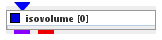
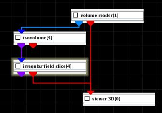
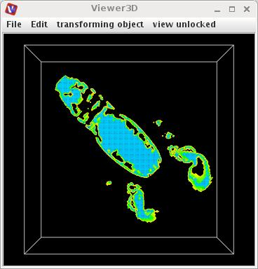

|
|
|

Cuts subvolume consisting of all points with component values above/below threshold
| input port | type | description | data acceptors |
|---|---|---|---|
| inField | VNField | Input for data field to extract isosurface | Regular Field scalar component Irregular Field 3-space scalar component with 3D cells |
| output port | type | description | data schemas |
| outField | VNIrregularField | Output for surface field | Irregular Field 3-space 0 cell sets with TRIANGLE cells |
| outObj | VNGeometryObject |
Isovolume
The module cuts the input mesh using an isosurface of the selected component with a specified isolevel value. It outputs the portion of the mesh that is on one side of the cutting isosurface, along with the data for one or more components. The dimensionality of the resulting mesh is the same as dimensionality of original mesh.
Input data
The input field is regular with at least one scalar component or irregular 3-space with at least one scalar component and at least one cellset containing 3D cells.
Output data
The output field is irregular 3-space, there is the geometry object of the field.
Computation parameters

The threshold component drop down list selects the input component for the isolevel value.
The threshold slider defines the isolevel value. If checkbox on the right hand side of the slider is on, the user may adjust range and value entering the values in text boxes. For values below and above minimum and maximum value of input data the lowest and highest value is used.
A radio button menu selects the extracted volume above or below the isosurface.
Presentation tab
Presentation tab contents are described in the common interfaces section unter the Presentation Panel entry.
Example

Choose the volume reader module from the regular data readers library, the isovolume and irregular field slice modules from 3D field mappers library and connect them. Read in lobster.dat file. In the isovolume module UI choose threshold 70 and the above option. In the irregular field slice module UI choose xy-slice, and in its GUI choose lines instead of surfaces.
